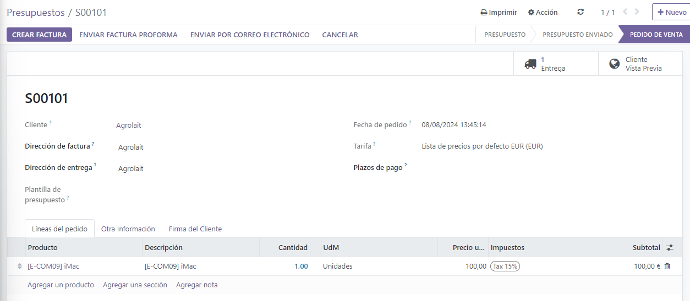
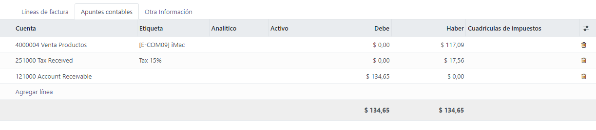
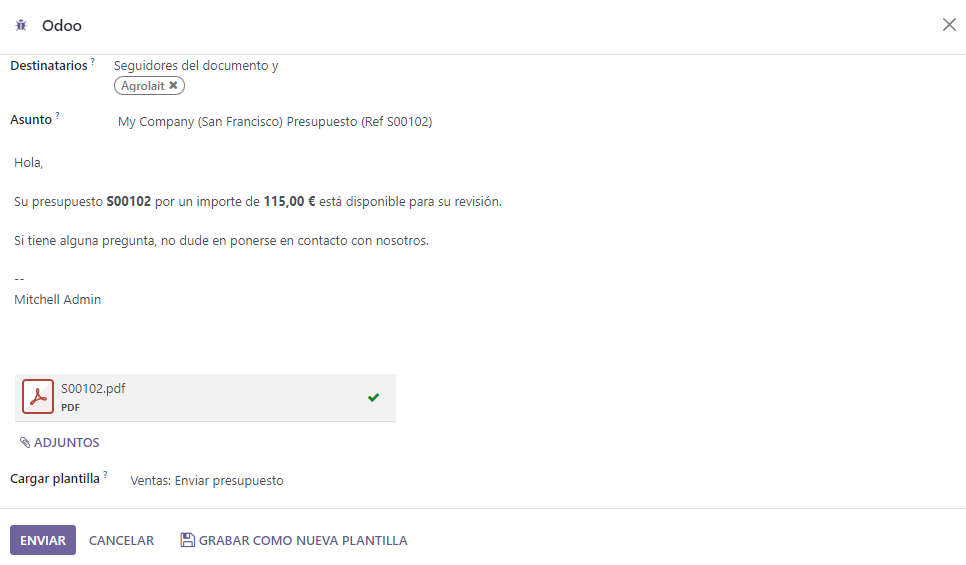
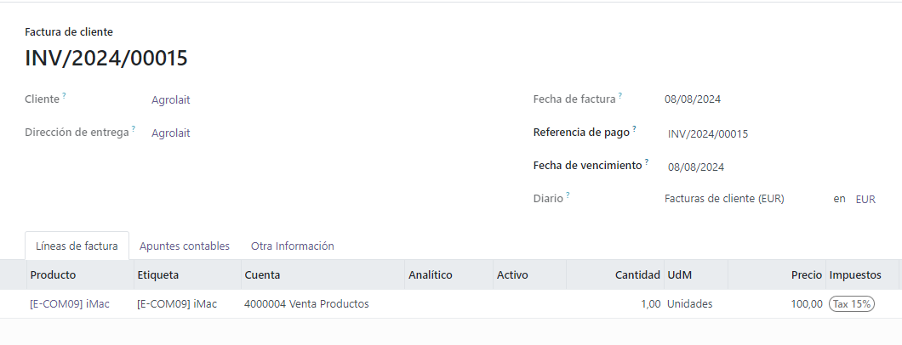
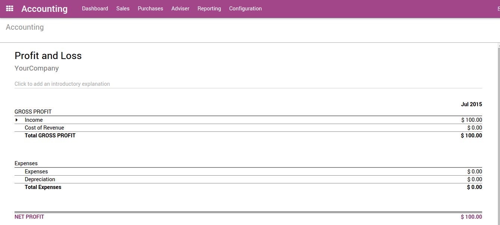
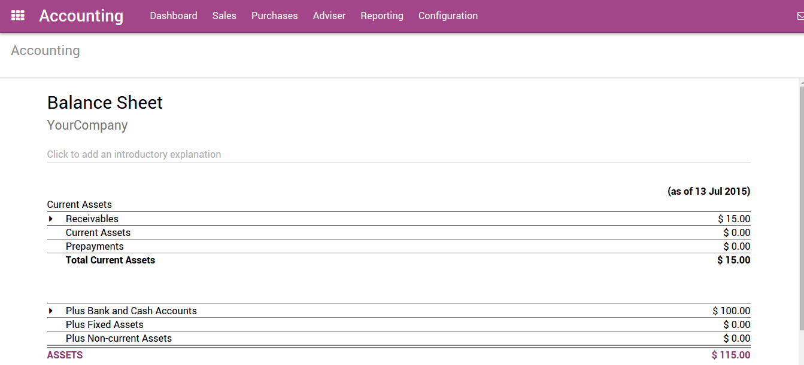

Facturas de cliente¶
Desde la factura de cliente a la cobranza¶
Odoo es compatible con múltiples flujos de trabajo de facturación y pago, puede elegir y usar los que satisfagan las necesidades de su negocio. Si quiere aceptar un solo pago para una sola factura, o procesar un pago que abarca múltiples facturas y tomar descuentos por anticipos, puede hacerlo con eficacia y precisión.
Desde el Borrador de factura a las Ganancias y pérdidas¶
Si al final elegimos un escenario típico de “orden por cobrar”, después que los bienes se entregaron, usted: emitirá una factura, recibirá un pago, depositará ese pago en el banco, se asegurará que la factura del cliente está cerrada, llevará el seguimiento si los clientes están retrasados y, finalmente, presentará sus ingresos en el reporte de pérdidas y ganancias y mostrará la disminución en Activos en el Balance general.
La facturación en la mayoría de países ocurre cuando se cumple una obligación contractual. Si envía una caja a un cliente, cumplió con los términos del contrato y puede facturarle. Si su proveedor le envía una orden, cumplió con los términos de ese contrato y pueden facturarle. Además, se han cumplido los términos del contrato cuando la caja se mueve a o desde un camión. En este punto, Odoo es compatible con la creación de lo que el personal de almacén denomina Borrador de factura.
Creación de facturas¶
Los borradores de factura se pueden generar de forma manual desde otros documentos como órdenes de venta, órdenes de compra, etc. Aunque puede crear un borrador de factura directamente si así lo desea.
Se debe proporcionar al cliente una factura con la información necesaria para que ellos puedan pagar por los bienes y servicios ordenados y entregados. También debe incluir otra información necesaria para pagar la factura en tiempo y forma.
Borradores de factura¶
El sistema genera facturas cuyo estado al inicio será de borrador. Mientras que estas facturas sigan sin validarse no afectarán la contabilidad dentro del sistema. Los usuarios pueden crear sus propios borradores de facturas.
Creemos una factura de cliente con la siguiente información:
Cliente: Agrolait
Producto: iMac
Cantidad: 1
Precio unitario: 100
Impuestos: impuesto del 15%
El documento se compone de tres partes:
la parte superior de la factura, con la información del cliente,
el cuerpo principal de la factura, con líneas de factura detalladas,
la parte inferior de la página, con detalles acerca de los impuestos, y los totales.
Facturas proforma o abiertas¶
Una factura normalmente incluye la cantidad y el precio de los bienes y/o servicios, la fecha y las partes involucradas, el número único de factura y la información de impuestos.
«Valide» la factura cuando esté listo para aprobarla. Posteriormente, la factura se mueve desde el estado de Borrador al estado Abierto.
Cuando valida una factura, Odoo le da un número único de una secuencia definida y modificable.
Los asientos contables que corresponden a esta factura se generan automáticamente al validar la factura. Puede ver los detalles al hacer clic en el asiento en el campo Asiento contable en la pestaña «Otra información».
Enviar la factura al cliente¶
Después de validar la factura de cliente, puede enviarla directamente al cliente a través de la función “Enviar por correo electrónico”.
Un asiento contable normal que se generó de una factura validada se verá así:
Cuenta |
Partner |
Fecha de vencimiento |
Debe |
Haber |
|---|---|---|---|---|
Cuentas por cobrar |
Agrolait |
01/07/2015 |
115 |
|
Impuestos |
Agrolait |
15 |
||
Ventas |
100 |
Pagos¶
En Odoo, una factura se considera pagada cuando el asiento contable asociado se ha conciliado con los asientos de pago. Si no ha habido una conciliación, la factura permanecerá en el estado Abierto hasta que ingrese el pago.
Un asiento contable normal que se generó de una factura validada se verá así:
Cuenta |
Partner |
Fecha de vencimiento |
Debe |
Haber |
|---|---|---|---|---|
Banco |
Agrolait |
115 |
||
Cuentas por cobrar |
Agrolait |
115 |
Recibir un pago parcial a través del estado de cuenta bancario¶
Puede ingresar en Odoo sus estados de cuenta bancarios de forma manual, o puede importarlos desde un archivo csv o desde otros formatos predefinidos de acuerdo a la localización de su contabilidad.
Cree un estado de cuenta bancario desde el tablero de Contabilidad con el diario relacionado e ingrese un importe de $100.
Conciliar¶
Conciliemos esto.

Ahora puede revisar cada transacción y conciliarlas o conciliar en masa con las instrucciones al final.
Después de conciliar los apuntes en la hoja, la factura relacionada ahora dice «Tiene pagos pendientes para este cliente. Puede conciliarlos para pagar esta factura».


Aplique el pago. A continuación puede ver que el pago se agregó a la factura.

Seguimiento de pagos¶
Hay una tendencia creciente de clientes que pagan cada vez más tarde. Además, los recaudadores deben realizar todo tipo de esfuerzos para cobrar cada vez más rápido.
Odoo le ayudará a definir su estrategia de seguimiento. Para recordarle a los clientes pagar sus facturas pendientes, puede definir diferentes acciones dependiendo de que tan atrasado está el pago. Estas acciones son un conjunto de niveles de seguimiento que se activan cuando la fecha de vencimiento de una factura ha sobrepasado un cierto número de días. Si hay otras facturas pendientes del mismo cliente, se ejecutarán las acciones de la factura más vencida.
Al ir a los registros del cliente y revisar los «Pagos pendientes» verá el mensaje de seguimiento y todas las facturas pendientes.


Reporte de antigüedad del cliente:¶
El reporte de antigüedad de cliente será una herramienta clave adicional para que el recaudador entienda los problemas de crédito del cliente, y priorice su trabajo.
Use el reporte de antigüedad para determinar qué clientes tienen pagos pendientes e inicie su proceso de cobranza.

Estado de resultados¶
El estado de resultados muestra los detalles de sus ingresos y gastos. En última instancia, este le da una imagen clara de sus pérdidas y ganancias netas. Algunas veces se refieren a él como «Estado de ingresos» o «Estado de ingresos y gastos.»
Balance general¶
El balance general resume los activos, pasivos y capital de su empresa en un punto específico del tiempo.

Por ejemplo, si gestiona su inventario mediante el método de contabilidad perpetua, debe esperar una disminución en la cuenta «Activos circulantes» una vez el material ha sido entregado al cliente.